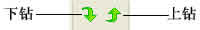
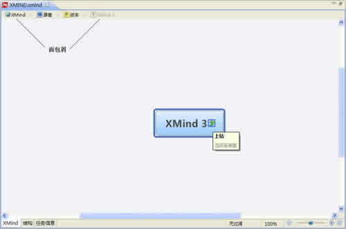
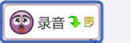

上钻和下钻功能设计让您更加便利地专注于思维图的某一个分支。当选择一个主题，并且下钻时，这个主题及其子主题会出现在一个以其为中心主题的新图中，但这仅仅是一种暂时的状态。您可以通过上钻返回到原图，也可以将此状态的图另存为一个新的文件。
所有的操作都是非常简单，方法如下：
按照下列步骤下钻：
- 选中一个主题；
-
您有两种方法来进行下钻：
- 在菜单栏选择"查看 > 下钻"。
- 或者使用快捷键"F6"。
- 现在会出现一张新图，所选的主题是中心主题，您可以在这里进行所有的操作。
下钻后的图

按照下列方法之一在下钻状态的图中上钻：
- 在菜单栏选择"查看 > 上钻"。
- 点击中心主题上的上钻按钮。
- 使用键盘快捷键"Shift+F6"。
- 点击思维图编辑区顶部的面包屑。
选中的主题上钻返回后的样子

注意： 在下钻状态下添加的自由主题在您上钻之后，不会再原图中显示出来。仅仅有一个"下钻"的标志，表明此主题还有一些其他的相关内容仅在下钻状态下显示。
面包屑
面包屑是当前思维图下钻路径的显示。它处于思维图编辑区的顶部，XMind工具栏的下方。面包屑上的每个节点都是某张图的中心主题。这样通过面包屑，您可以很方便的把握当前图的相对位置。而且点击每个节点都可以很快捷地将我们带回到某张图。
您可能还对下列内容感兴……